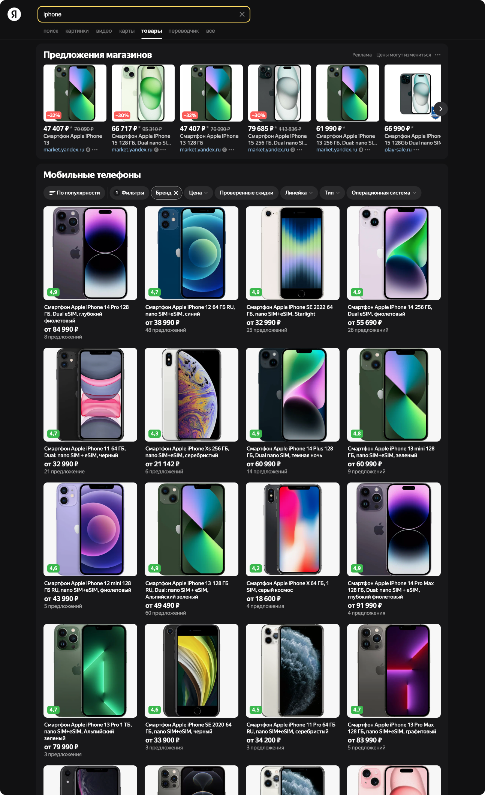
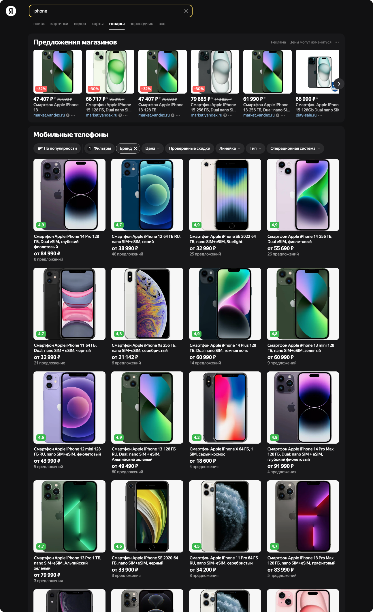
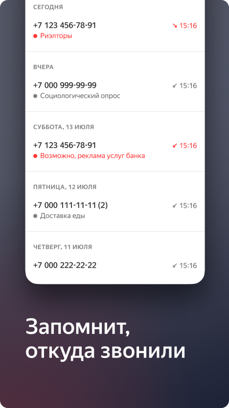
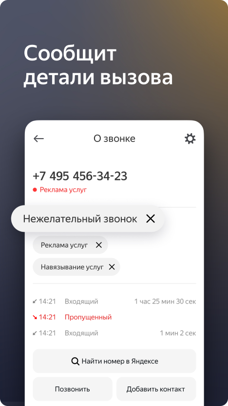
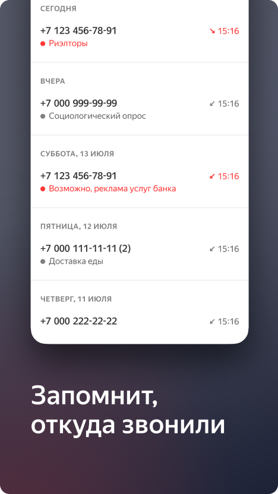
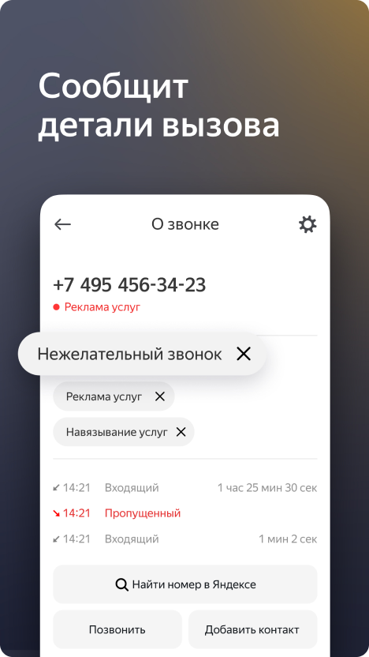

Расширенные ответы Яндекс.Маркета и гео-сервисов
Задача
Предоставить пользователю информацию об организациях и товарах на странице поиска.
Решение
Виджеты категорий товаров и организаций, конкретной организации.
Результат
Люди стали больше проводить времени на странице поиска и реже уходить на сторонние сервисы.
Примеры запросов
Парикмахерские Кафе Пушкин Телевизор 



")
Определитель номера
Задача
Сообщать пользователю о звонящей организации и предупреждать о спаме.
Решение
Виджет на экране входящего звонка (Android), возможность оставлять фидбек в приложении. Использует для определения имеющуюся базу организаций и базы таких сайтов, как neberitrubku.com.

 



Сэмплер (грувбокс)
Задача
Реализовать веб-приложение для наигрывания музыки из загруженных сэмплов.
Решение
Использовал Web Audio API + ReactJS.
Полноэкранный режим для Яндекс.Музыки
Проблема
После ухода Spotify осталась потребность в экране воспроизведения музыки без лишних элементов интерфейса.
Решение
Расширение для браузеров на Chtomium (Yandex Browser, Chrome).